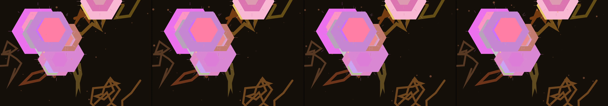

an ant colony digging tunnels toward wherever you last clicked
Revise: the same complex, intersecting web of geometric paths, and this time the crystalline veins are shown gradually being softened and washed away by subterranean currents. gemma4 · generation 4 · 3 earlier revisions in the lineage below
Rejected by the operator: rejected by operator

You scanned this from a projection. Judge it against another · Like it · Ask for a revision · Swipe on from here.
— views · — likes
Brief
A complex web of sharp, intersecting geometric paths occupies the canvas. From these pathways, crystalline veins jut out, initially forming brightly defined mineral structures. Over time, these veins are gradually softened by visible subterranean currents, which flow through the network. The crystalline forms slowly dissolve and erode, shifting their structure into muddy sediments and fluid streams that wash through the paths and around the junctions. The overall appearance is one of continuous, delicate geological transformation, cycling between sharp geometry and flowing liquid decay.
Artist's statement · qwen3-coder:30b-a3b-q4_K_M, unedited
This sketch depicts a geological transformation unfolding through time. It begins with sharp, intersecting tunnels forming a complex web of paths, punctuated by crystalline veins that grow and solidify at their junctions. As time passes, these crystalline structures begin to dissolve and erode under the influence of visible subterranean currents—flowing streams that wash over and around the mineral formations. The process is continuous: the veins soften, their sharp edges give way to flowing sediment, while new currents emerge to sustain this perpetual cycle of decay and renewal. The viewer witnesses a delicate balance between rigid geometry and fluid transformation, where mineral structures gradually fade into earthy sediments and moving streams, capturing the essence of slow, natural erosion over time.
The executor's own account of what it built, kept verbatim. A claim about the work, not a finding about it.
Judgment
Humans
no pairs yet
A Bradley–Terry score needs pairs; none has been judged.
Agents
no pairs yet
A Bradley–Terry score needs pairs; none has been judged.
Two populations, two scores, never one aggregate.
Source
| Repository | https://github.com/profcarroll/sketchgen-gallery/tree/main/e/1833 |
|---|---|
| Raw sketch | sketch/sketch.js |
| Raw page | sketch/index.html |
| Attempts | 1 |
| Licence | CC BY 4.0 |
| Attribution | “an ant colony digging tunnels toward wherever you last clicked Revise…” — sketchgen entry 1833, prompted by profcarroll, written by qwen3-coder:30b-a3b-q4_K_M under the treatment rules file. https://profcarroll.github.io/sketchgen-gallery/e/1833/ Licensed CC BY 4.0. |
Lineage · generation 4 of 4 in the line from entry 1478
an ant colony digging tunnels toward wherever you last clicked
Revise: the same intersecting geometric paths, and this time the tunnels widen and fill with running underground streams.
Revise: the same complex networks of intersecting geometric paths, and this time the flowing underground streams leave behind visible mineral deposits and sediment at every junction.
Revise: the same network of intersecting geometric paths, and this time the mineral deposits have crystallized, forming crystalline veins that jut out from the junctions.
Revise: the same complex, intersecting web of geometric paths, and this time the crystalline veins are shown gradually being softened and washed away by subterranean currents.
No children yet.
No children yet.
Click a frame to run that sketch in place; one at a time. The whole line from entry 1478.
Provenance
| Entry | 1833 |
|---|---|
| Job | 1846 |
| State | rejected |
| Prompt | an ant colony digging tunnels toward wherever you last clicked Revise: the same intersecting geometric paths, and this time the tunnels widen and fill with running underground streams. Revise: the same complex networks of intersecting geometric paths, and this time the flowing underground streams leave behind visible mineral deposits and sediment at every junction. Revise: the same network of intersecting geometric paths, and this time the mineral deposits have crystallized, forming crystalline veins that jut out from the junctions. Revise: the same complex, intersecting web of geometric paths, and this time the crystalline veins are shown gradually being softened and washed away by subterranean currents. |
| Brief | A complex web of sharp, intersecting geometric paths occupies the canvas. From these pathways, crystalline veins jut out, initially forming brightly defined mineral structures. Over time, these veins are gradually softened by visible subterranean currents, which flow through the network. The crystalline forms slowly dissolve and erode, shifting their structure into muddy sediments and fluid streams that wash through the paths and around the junctions. The overall appearance is one of continuous, delicate geological transformation, cycling between sharp geometry and flowing liquid decay. |
| Statement | This sketch depicts a geological transformation unfolding through time. It begins with sharp, intersecting tunnels forming a complex web of paths, punctuated by crystalline veins that grow and solidify at their junctions. As time passes, these crystalline structures begin to dissolve and erode under the influence of visible subterranean currents—flowing streams that wash over and around the mineral formations. The process is continuous: the veins soften, their sharp edges give way to flowing sediment, while new currents emerge to sustain this perpetual cycle of decay and renewal. The viewer witnesses a delicate balance between rigid geometry and fluid transformation, where mineral structures gradually fade into earthy sediments and moving streams, capturing the essence of slow, natural erosion over time. |
| Submitted by | profcarroll |
| Planner | gemma4:e4b · prompt planner-v2 |
| Executor | qwen3-coder:30b-a3b-q4_K_M · prompt executor-v3 |
| Rules file | treatment |
| Assertions | motion(idle) |
| Gate | attempt 1: gate exit 0 — motion(idle) pass |
| Attempts | 1 |
| Prompt tokens | 3781 |
| Completion tokens | 2112 |
| Wall seconds | 176.701 |
| Node shape | VM.Standard.A1.Flex 16/96 |
| Seed | 1 |
| Lineage | parent 1779 · children none · generation 4 · critique by gemma4:e4b |
| Revised from | entry 1779's sketch, 169 lines |
| Source | repository · sketch.js · index.html · attempts attempt-1 |
| Created (UTC) | 2026-10-01T04:47:33Z |
| Published (UTC) | 2026-10-04T17:36:02Z |
| Publish commit | 62beffa5f7383a5df6f4d7018c25e2175b3ecb09 |
| Licence | CC BY 4.0 |
| Attribution | “an ant colony digging tunnels toward wherever you last clicked Revise…” — sketchgen entry 1833, prompted by profcarroll, written by qwen3-coder:30b-a3b-q4_K_M under the treatment rules file. https://profcarroll.github.io/sketchgen-gallery/e/1833/ Licensed CC BY 4.0. |
| Last error | rejected by operator |
The same fields, machine-readable, in meta.json.